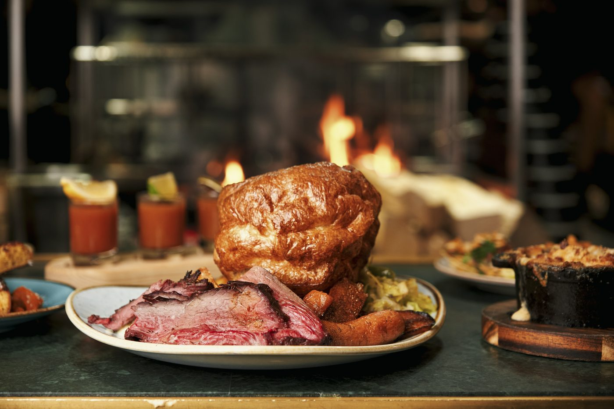

Rare-breed beef slow-roasted over embers, beef-fat potatoes, a Yorkshire the size of a small dog and a gravy that takes sixteen hours. Time Out agrees. Sundays sell out by Friday.

Beef-fat potatoes · giant Yorkshires · honey-glazed carrots · gravy from Saturday night




Time Out, London: "The roast is unbeatable. The brunch is iconic."
"The Three Beast Feast is outrageous. Beef, pork and lamb, all cooked over the fire."
Emma L · Google"Hands-down the best Sunday roast in London. The Yorkshire is the size of a small dog."
Sophie R · Google"Proper fire-cooked roast with incredible gravy. Worth booking ahead, it gets busy."
James T · GoogleConfirmed in seconds. Free to cancel. Up to eight online, nine or more through the events team.
9+ · Soho · City · Bar-B-Q & Crabshack · Opening list